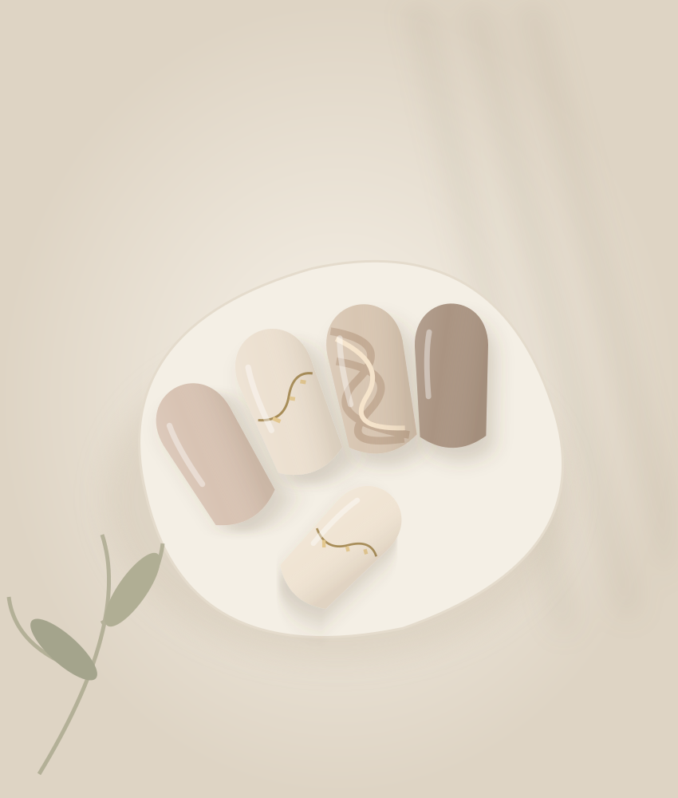
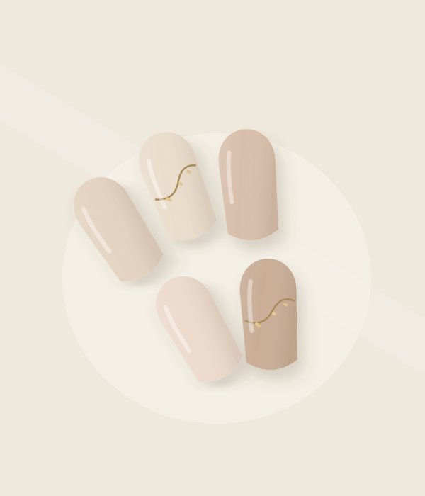
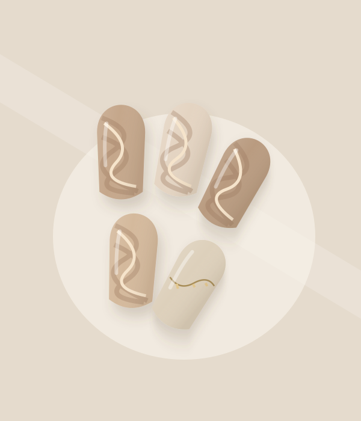
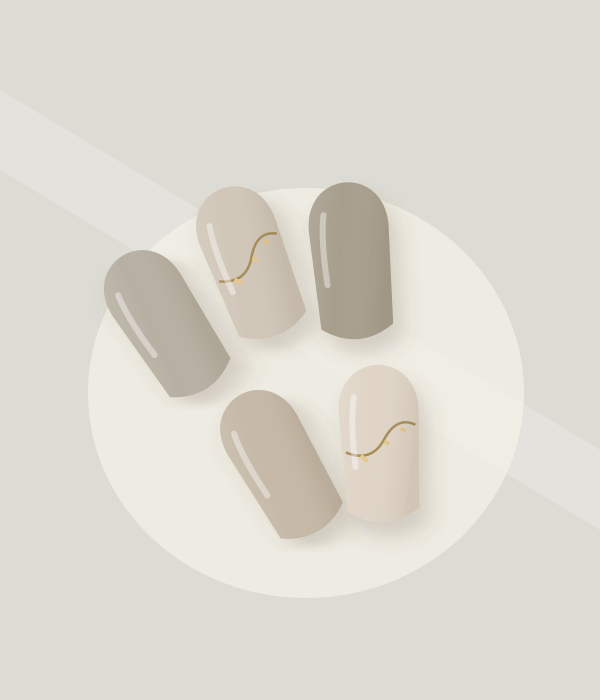

FUKUOKA / KOTABE
毎日に、
ちょっと嬉しくなる
指先を。
私らしく、心地よく。
シンプルとニュアンスを楽しむ、
1席だけのプライベートネイルサロン。
Private Nail Salon — Lana nail

SIMPLE. NATURAL. YOU.SCROLL TO EXPLORE ↓
01 / ABOUT
Private Nail Salon
ひと息ついて、
自分のためのひとときを。
福岡市早良区・小田部のLana nail。
日々の装いになじむシンプルなネイルから、
さりげない表情を楽しむニュアンスネイルまで。
いつもの毎日に、小さな彩りを。
01
PRIVATE
1席のプライベートサロン
02
KIDS WELCOME
お子さま連れOK
03
PARKING
駐車場1台あり
02 / NAIL DESIGN
Design
さりげなく、私らしく。
指先に、お気に入りのニュアンスを。



掲載イラストはデザインの方向性を伝えるイメージです。Lana nailの施術実例ではありません。
04 / KIDS WELCOME
Kids Welcome
お子さまと一緒に、
ネイルを楽しめる時間を。
「子どもと一緒でも、大丈夫かな？」
そんな方にも、知っていただきたいサロンです。
Lana nailは、お子さま連れOK。
元保育士のオーナーがお迎えする、
1席のプライベートサロンです。
お子さま同伴時の設備・ご利用条件は、
ご予約前にご確認ください。
05 / OWNER
Owner
元保育士のネイリスト指先のことも、
指先のことも、
毎日のことも。
ネイルを楽しむひとときが、心のほどける時間になるように。
親しみやすい雰囲気が伝わるサイトをご提案します。
正式なオーナーメッセージ・プロフィールは、
ご本人のお言葉とお写真でご紹介します。
06 / LOCATION
Access
福岡市早良区・小田部のプライベートサロン。
- サロン名
- Lana nail
- エリア
- 福岡市早良区 小田部（こたべ）
- 駐車場
- 1台あり
詳しい住所・営業時間・アクセス方法は、
正式なご案内に合わせて掲載いたします。
A LITTLE TIME FOR YOURSELF
Reservation
次のお気に入りを、指先に。
ご予約・お問い合わせ
サイトご提案用のため、予約受付は行っていません。
正式な予約窓口を確認でき次第、こちらに掲載します。
このボタンはデザイン確認用です。現在、ご予約・お問い合わせは送信できません。